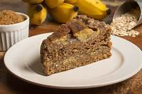
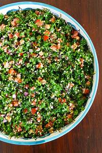
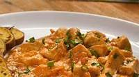

🍎 Dicas para uma Alimentação Saudável
-
1. Coma mais alimentos naturais
Dê preferência a frutas, verduras, legumes, grãos integrais e proteínas magras. Quanto menos processado, melhor!
-
2. Beba bastante água
Manter-se hidratado melhora a digestão, a circulação e até a saúde da pele. O ideal é beber pelo menos 2 litros por dia.
-
3. Faça refeições balanceadas
Inclua proteínas, carboidratos saudáveis e gorduras boas em cada refeição para garantir todos os nutrientes necessários.
-
4. Evite alimentos ultraprocessados
Refrigerantes, salgadinhos, fast food e embutidos que contenham conservantes, gorduras estragadas e excesso de açúcar, prejudicando a saúde.
-
5. Consuma fibras diariamente
Alimentos como aveia, chia, linhaça e vegetais ajudam no funcionamento do intestino e na prevenção da saciedade.
-

Bolo Integral de Banana
Este bolo combina o sabor natural da banana com a leveza das farinhas integrais, resultando em uma opção nutritiva e deliciosa para o café da manhã ou lanche.
Tudo Gostoso -

Tabule
Uma salada refrescante de origem árabe, feita com trigo para quibe, tomate, pepino, salsinha e hortelã, temperada com limão e azeite. É uma opção leve e rica em fibras.
Tudo Gostoso -
Crepioca - Pão de Queijo de Frigideira
Uma mistura de crepe com tapioca, esta receita é prática e rica em proteínas, perfeita para um lanche rápido e saudável.
Tudo Gostoso -

Strogonoff Fit com Batata-Doce
Uma versão mais leve do tradicional strogonoff, utilizando iogurte natural no lugar do creme de leite e acompanhada de batata-doce, oferecendo uma refeição balanceada e saborosa.
Tudo Gostoso